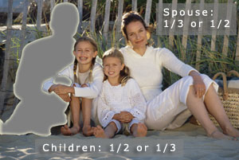

Intestacy
Having died without a will.
What happens when a person dies intestate? Essentially, state law will decide how assets are distributed. These statutes vary from state to state, but there is typically some split of assets between the spouse and the children. If there is no surviving spouse or children, then the assets typically go to the parents, then brothers and sisters, then cousins and nephews, etc.
Note: In community property states (e.g., Alaska (optional), Arizona, California, Idaho, Louisiana, Nevada, New Mexico, Texas, Washington, and Wisconsin), community property goes to the surviving spouse, with the remaining separate property owned by the deceased passing by state law in a manner similar to all other states.
While these statutes are equitable, taking into consideration the interests of both the spouse and children, they rarely accomplish what the decedent would have preferred.
The diagram on right illustrates what happens in most states when a person dies without a will and is survived by a spouse and children.
If survived by spouse and children, most states split the assets between the surviving spouse and the children, with the spouse receiving 1/3 or 1/2 of the assets. This is true regardless of the age of the children.
Note: In community property states, such distributions would only pertain to separately owned property, since all community property would go to the surviving spouse.
 The example above may not be what the client wants to happen. However, the pitfalls of intestacy are quite significant.
Escheat - A reversion of property to the state if there is no heir to inherit.
Click each pitfall below to learn more.
Under any number of scenarios, the surviving spouse is left with only part of the assets. This conflicts with the desire of most spouses for the surviving spouse to have the full benefit of all the assets for his or her lifetime.
Because minor children cannot own property, their inheritance may require the appointment of a guardian to handle the property. While the property is administered in a guardianship, accountings to the court may be required and court approval may be needed for the sale of assets or their use on behalf of the children. Alternative planning that does not involve a court-monitored guardianship is typically preferred.
For example, a trust could be created to hold the funds for the children and a trustee could be empowered to use his or her own discretion (not the court's) in making distributions for their health, education, maintenance, and support. The trust might further direct that the children start receiving the trust income at age 18, receive one-third of the principal at age 21, one-half of the balance of the principal at age 25, and the balance of the funds at age 30.
As previously discussed, allowing a child to receive his or her inheritance upon reaching the age of majority is not necessarily a desirable strategy. Under intestacy laws, however, this result is inevitable.
There may be variations in need among the beneficiaries that the decedent would want considered. For example, one child may have special needs, with a higher anticipated need for financial assistance throughout the child's life. But the rules of intestacy are blind to such differences, and each child would be treated the same.
While this rarely happens, if the decedent left behind no living relatives, the assets would escheat to the state. It is highly doubtful that anyone would want the government to be the sole heir.
Most people have friends and charities to whom they would like to leave something behind. Intestacy does not recognize any beneficiaries outside the decedent's family.